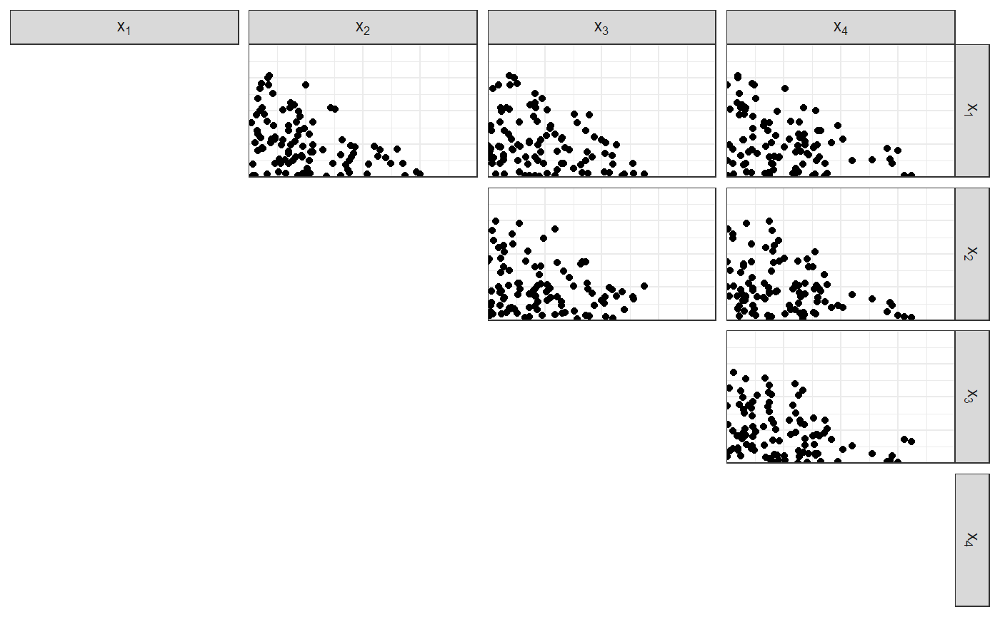
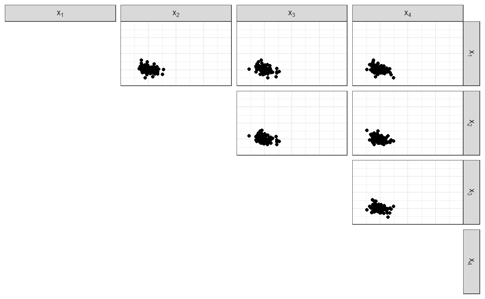
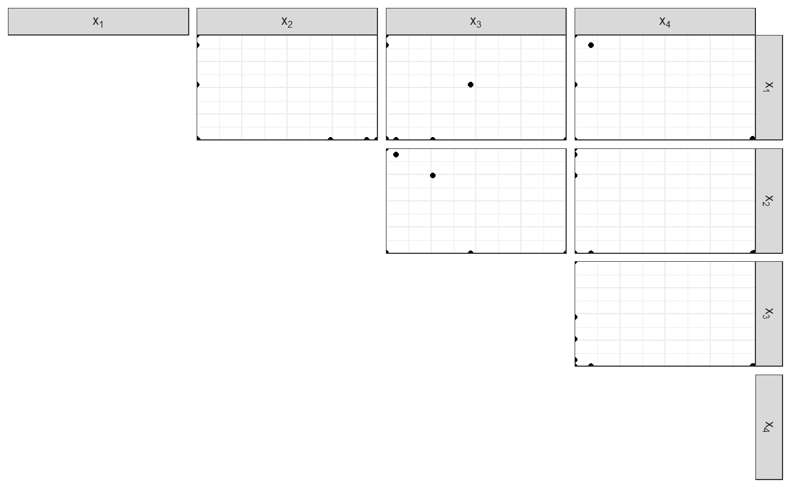

Dirichlet distribution tools
Lorenzo Gaborini
2019-01-14
Source:vignettes/dirichlet-distribution.Rmd
dirichlet-distribution.RmdThis package contains functions to sample from a Dirichlet distribution.
Notation
We call \(\text{Simplex}{(p-1)}\) the set of vectors in \(\mathbb{R}^p\) whose components form a distribution on \(p\) items.
In other words, \(\boldsymbol{X} \in \text{Simplex}{(p-1)}\) iff \(X_i \in [0,1]\) and \(\sum_{i=1}^p X_i = 1\).
Let \(\boldsymbol{X}\) be a vector in \(\text{Simplex}{(p-1)}\), let \(\boldsymbol{\alpha}\) be a vector in \(\mathbb{R}^p\) with positive components.
Then, \(X\) can have the Dirichlet distribution: \(X \mid \boldsymbol{\alpha} \sim \text{Dirichlet}{(\boldsymbol{\alpha})}\).
We can write \(\boldsymbol{\alpha} = \alpha_0 \, \boldsymbol{\nu}\), where:
- \(\alpha_0 = \sum_i \alpha_i\) is the concentration parameter: \(\alpha_0 \in \mathbb{R}^{+}\)
- \(\boldsymbol{\nu}\) is the base measure: \(\boldsymbol{\nu} \in \text{Simplex}{(p-1)}\).
Properties
- \(\mathop{\mathbb{E}}[\boldsymbol{X}] = \boldsymbol{\alpha} / \alpha_0 = \boldsymbol{\nu}\)
- \(\mathop{\mathrm{Var}}[\boldsymbol{X}] = \dfrac{ \boldsymbol{\nu} \cdot (1 - \boldsymbol{\nu})}{\alpha_0 + 1}\)
Particular cases
If \(\boldsymbol{\nu}\) is constant, \(\boldsymbol{\nu} = 1/p\). The Dirichlet distribution is called symmetric Dirichlet, and is only parametrised by the concentration parameter \(\alpha_0\).
- When \(\alpha_0 = p\), \(\alpha_i = 1 \forall i\): the Dirichlet distribution is uniform over \(\text{Simplex}{(p-1)}\). This is the least informative situation.
- When \(\alpha_0 \to 0\), \(\alpha_i \to 0\): the Dirichlet distribution concentrates over the border of \(\text{Simplex}{(p-1)}\).
- When \(\alpha_0 \gg 1\), \(\alpha_i \to 0\): the Dirichlet distribution concentrates over the mean (and the variance decreases).
Examples
Sample from a \(p=4\) Dirichlet:
n <- 100
# The parameter
alpha <- c(0.5, 0.1, 5, 0.1)
p <- length(alpha)
# Concentration and base measure
alpha0 <- sum(alpha)
nu <- alpha / alpha0\(\alpha_0 = 5.7\)
\(\boldsymbol{\nu} = \left( 0.0877193, 0.0175439, 0.877193, 0.0175439 \right)\)
\(\boldsymbol{\alpha} = \left( 0.5, 0.1, 5, 0.1 \right)\)
df_diri <- fun_rdirichlet(n, alpha)
head(df_diri)
#> # A tibble: 6 x 4
#> `x[1]` `x[2]` `x[3]` `x[4]`
#> <dbl> <dbl> <dbl> <dbl>
#> 1 0.0213 0.000000407 0.936 0.0431
#> 2 0.00265 0.00233 0.994 0.00119
#> 3 0.300 0.0879 0.612 0.000000814
#> 4 0.0000312 0.00652 0.985 0.00815
#> 5 0.0589 0.102 0.833 0.00523
#> 6 0.00110 0.000165 0.936 0.0631#> Loading required namespace: GGally
Uniform sampling
Uniform base measure, unitary Dirichlet parameters: \(\boldsymbol{\alpha} = \boldsymbol{1}\).
\(\alpha_0 = 4\)
\(\boldsymbol{\nu} = \left( 0.25, 0.25, 0.25, 0.25 \right)\)
\(\boldsymbol{\alpha} = \left( 1, 1, 1, 1 \right)\)
df_diri <- fun_rdirichlet(n, alpha)
head(df_diri)
#> # A tibble: 6 x 4
#> `x[1]` `x[2]` `x[3]` `x[4]`
#> <dbl> <dbl> <dbl> <dbl>
#> 1 0.106 0.244 0.0598 0.589
#> 2 0.155 0.317 0.505 0.0235
#> 3 0.0826 0.526 0.199 0.192
#> 4 0.476 0.230 0.143 0.151
#> 5 0.0163 0.140 0.167 0.676
#> 6 0.213 0.334 0.292 0.161
Concentrated sampling
Concentration parameter \(\gg p\), Dirichlet parameters \(\gg 1\)
\(\alpha_0 = 100\)
\(\boldsymbol{\nu} = \left( 0.25, 0.25, 0.25, 0.25 \right)\)
\(\boldsymbol{\alpha} = \left( 25, 25, 25, 25 \right)\)
df_diri <- fun_rdirichlet(n, alpha)
head(df_diri)
#> # A tibble: 6 x 4
#> `x[1]` `x[2]` `x[3]` `x[4]`
#> <dbl> <dbl> <dbl> <dbl>
#> 1 0.272 0.235 0.267 0.226
#> 2 0.296 0.281 0.201 0.222
#> 3 0.325 0.252 0.182 0.241
#> 4 0.226 0.247 0.237 0.289
#> 5 0.226 0.237 0.288 0.249
#> 6 0.254 0.240 0.254 0.252
Degenerate sampling
Concentration parameter \(\\ p\), Dirichlet parameters \(\\ 1\)
\(\alpha_0 = 0.01\)
\(\boldsymbol{\nu} = \left( 0.25, 0.25, 0.25, 0.25 \right)\)
\(\boldsymbol{\alpha} = \left( 0.0025, 0.0025, 0.0025, 0.0025 \right)\)
df_diri <- fun_rdirichlet(n, alpha)
head(df_diri)
#> # A tibble: 6 x 4
#> `x[1]` `x[2]` `x[3]` `x[4]`
#> <dbl> <dbl> <dbl> <dbl>
#> 1 5.79e-196 2.22e- 60 0. 1.00e+ 0
#> 2 2.08e- 44 0. 1.69e- 65 1.00e+ 0
#> 3 1.00e+ 0 2.07e-124 9.95e-229 0.
#> 4 9.96e- 14 0. 4.62e-141 10.00e- 1
#> 5 2.38e- 93 3.10e- 35 8.84e- 96 1.00e+ 0
#> 6 7.49e-251 1.82e- 3 9.98e- 1 1.24e-205